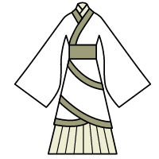

汉服文化是反映儒家礼典服制的文化总和，贯穿西周到明朝的儒家书史体系《礼记》、《后汉书·舆服下》、《晋书·舆服》、《宋书·礼五》、《南齐书·舆服》、《魏书·礼志四之四第十三》、《隋书·礼仪七》、《旧唐书·舆服》、《新唐书·车服》、《宋史·舆服》、《明史·舆服》，通过祭服、朝服、公服、常服以及配饰体现出来。汉服文化从三皇五帝延续至今(清代被迫中断)，通过连绵不断的继承完善着自己，汉服文化是一个非常成熟并自成体系的千年文化。在当代，汉服文化正在通过汉服运动这一民间文化运动形式逐渐复兴。
汉服自
 的衣裳、皮弁服、袆衣、鞠衣、袒衣、袴褶、襌衣、褠衣、裲裆等服制开始，历经几千年的继承，在大唐《开元礼》中得到了充分展现和体系化，按功能分为冕服、朝服、公服、常服。大唐制，天子衣服，有大裘冕、衮冕、鷩冕、毳冕、希冕、玄冕、通天冠、武弁、黑介帻、白纱帽、平巾帻、白帢，凡十二等。公之服，自衮冕而下如王之服;侯伯之服，自鷩冕而下如公之服;子男之服，自毳冕而下如侯伯之服;孤之服，自冕而下如子男之服;卿大夫之服，自玄冕而下如孤之服;士之服，自皮弁而下如大夫之服。其斋服有玄端素端。周礼对周代及周代后世的服饰产生了重要的影响。汉服文化就是以
的衣裳、皮弁服、袆衣、鞠衣、袒衣、袴褶、襌衣、褠衣、裲裆等服制开始，历经几千年的继承，在大唐《开元礼》中得到了充分展现和体系化，按功能分为冕服、朝服、公服、常服。大唐制，天子衣服，有大裘冕、衮冕、鷩冕、毳冕、希冕、玄冕、通天冠、武弁、黑介帻、白纱帽、平巾帻、白帢，凡十二等。公之服，自衮冕而下如王之服;侯伯之服，自鷩冕而下如公之服;子男之服，自毳冕而下如侯伯之服;孤之服，自冕而下如子男之服;卿大夫之服，自玄冕而下如孤之服;士之服，自皮弁而下如大夫之服。其斋服有玄端素端。周礼对周代及周代后世的服饰产生了重要的影响。汉服文化就是以
 为基础，经过汉唐宋明的考证和传承形成的千年不变的体系。
为基础，经过汉唐宋明的考证和传承形成的千年不变的体系。